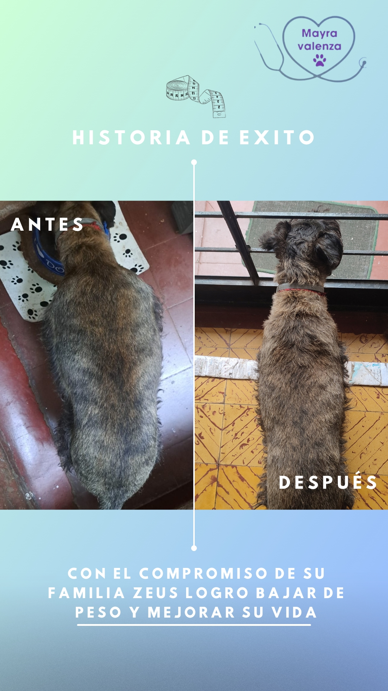
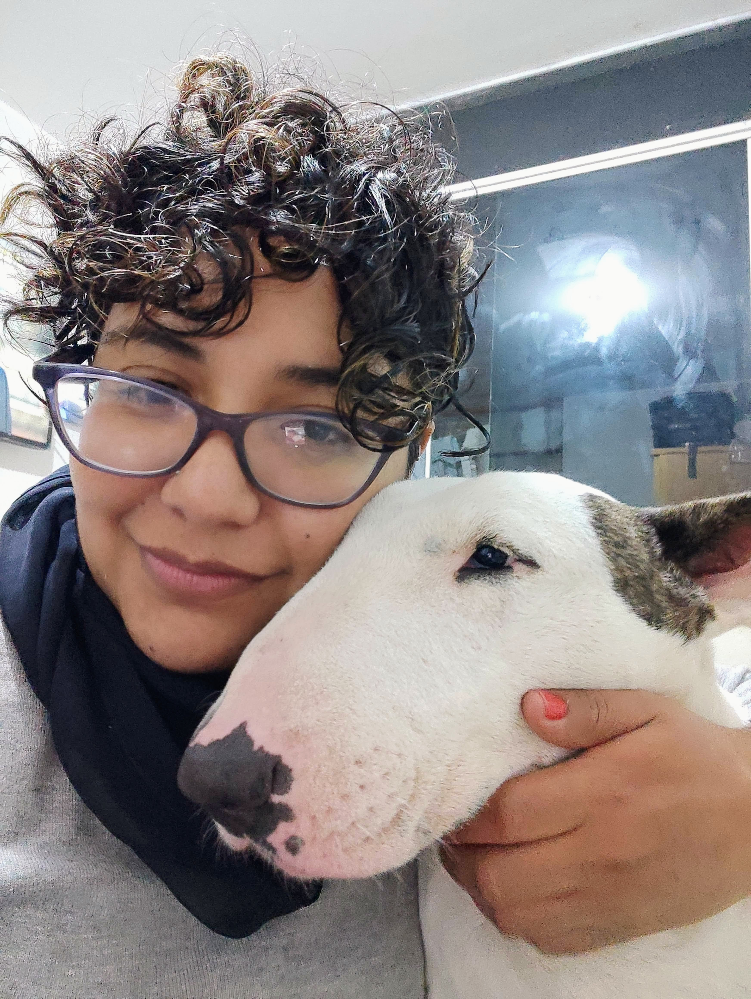

Descubre los 5 secretos que ya han cambiado la vida de cientos de perros y sus tutores
🎯 Quiero transformar la salud de mi perro

🏃 zeus (artrosis y sobrepeso) → -5 kg y movilidad mejorada
Soy Mayra Valenza, especialista en nutrición natural con más de 10 años de experiencia clínica ayudando a perros con alergias, obesidad y enfermedades crónicas. Esta guía es tu primer paso hacia una vida más plena para tu compañero de cuatro patas.
Hoy: USD $15 (precio normal: USD $25)
✅ Acceso inmediato al eBook + Bonos
✅ Acompañamiento personalizado en grupo privado
Solo si se da cocida. Los huesos crudos son seguros si están bien elegidos y supervisados.
Haz una transición gradual. Puedes cocer ligeramente al inicio.
No más que una croqueta premium. Y reduces gastos veterinarios.
Sí, puedes hacerlo parcialmente y ajustar con suplementos naturales.
Con planificación semanal, solo 15–20 minutos.